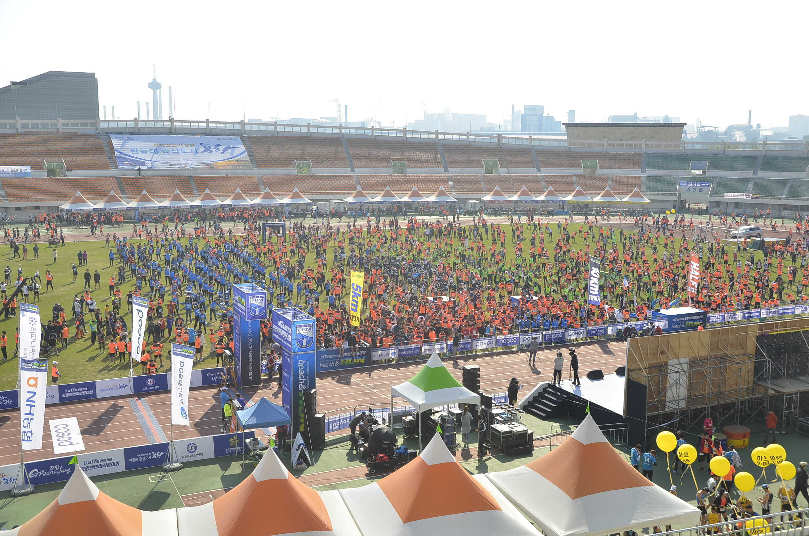
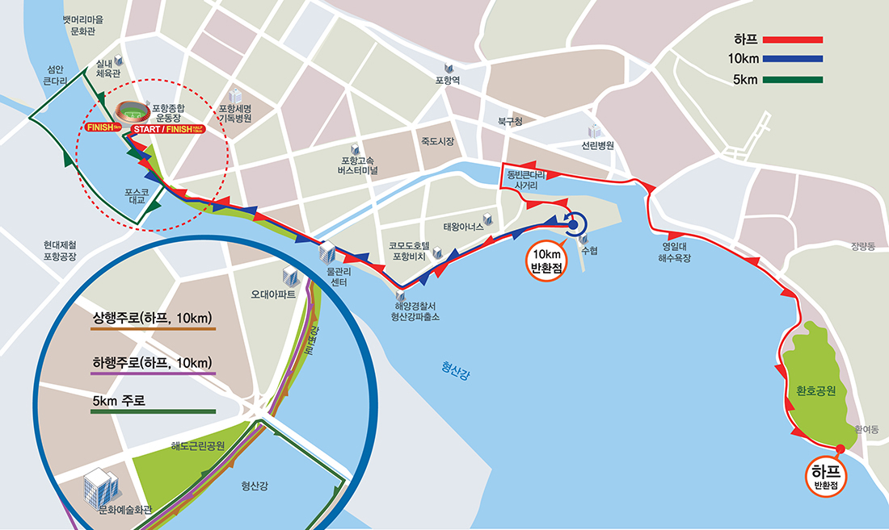
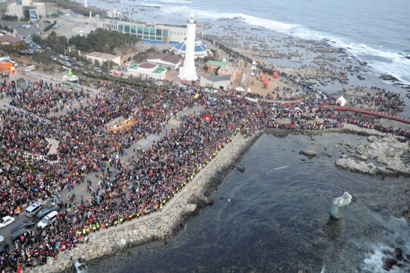

The Pohang International Fireworks Festival is held at Yeongildae Beach in Pohang, which is also known as the "City of Light and Fire." Each summer, people flock to Bukbu (Yeongildae) beach and to the park on the bank of the Hyeongsan river to witness the most spectacular pyrotechnic displays and cutting edge fireworks, together with many performances of Korean traditional dance and music. The festival features a fireworks competition, a parade of lights, street performances, and a range of hands-on activities. It is usually held around the end of July. The main events include:
Additional events include:
  The Pohang Beach Marathon takes place Sunday, May 19th, 2019 at 8:00 AM. There are half marathon, 10k, and 5k races. They all start at the Pohang Stadium which is near the POSCO bridge. The course goes along the Hyeongsan River, Pohang Canal, Yeongildae Beach and the Sunrise Park. Registration should be completed by April 5th. Registration fees cost 30,000 won for the half marathon, 25,000 won for the 10k, and 20,000 won for the 5k.
 Homigot, the main venue of the Homigot Sunrise Festival, is located on the easternmost point of the Korean Peninsula. Homigot means "village on a tiger's tale" and is also the location for the first sunrises in Korea. The festival includes local cultural performances, a New Year celebratory event, fire show, sunrise concert and other diverse performances. Visitors may sample free ddeokguk, a traditional New Year's Day dish, during the special event of "Serving ddeokguk for 10,000". Other events such as kite-flying and launching hope balloons with wishes attached will provide enjoyable moments to reflect on the previous year and create new year resolutions. Additional events include:
Six on the Beach is an Ultimate (also known as Ultimate Frisbee) tournament that takes place during the last weekend of August every summer at Yeongildae Beach in Pohang. The 2019 tournament will take place August 24th-25th from 11:00 AM - 8:00 PM on Saturday and 10:00 AM - 4:30 PM on Sunday. There will be around 12 players on each team with 6 players from each team on the field at the same time. It's a hat tournament which means that names will be drawn from a hat randomly to form teams. Experience playing Ultimate is not required but most players have at least a basic level of throwing and catching discs. Registration is done on a first-come first-serve basis. More information and the registration form can be found on the Facebook event page.